Handleiding Loket Lokaal Bestuur
Waarvoor dient het Loket Lokaal Bestuur?
Inhoud van de handleiding
Aanmelden
Landing pagina
Aanmelden verloopt via het gekende gebruikersbeheer Vlaanderen. Klik op de blauwe knop "meld u aan" om verder te gaan.
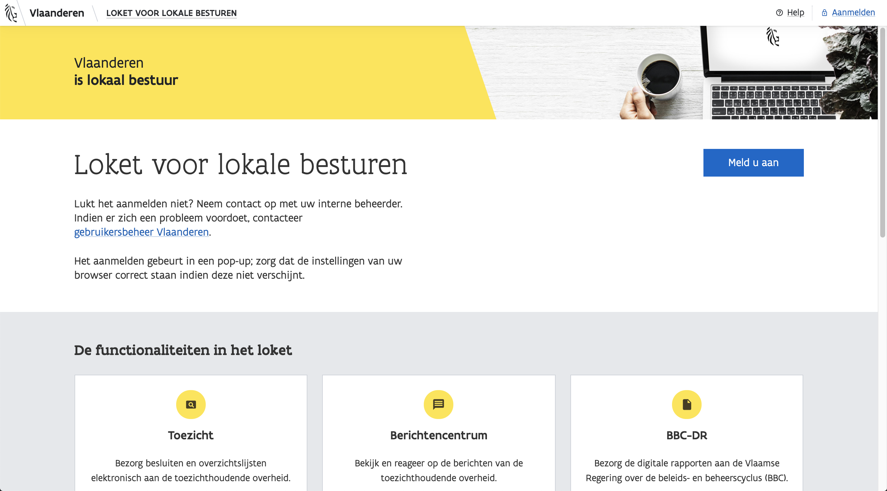Pop-up
Vervolgens verschijnt er een popup, die u enkele veilige opties voorstelt om u mee aan te melden. Verschijnt de popup niet? Zorg dat de instellingen van uw browser goed staan.

Probleem
Indien u toegang wil aanvragen tot het loket, neem contact op met uw interne beheerder. Indien er zich een probleem voordoet, neem contact op met het gebruikersbeheer Vlaanderen.
Overzicht
Eens u aangemeld bent, krijgt u een overzicht van al de onderdelen waar u toegang tot heeft in het loket. Klik op de blauwe knoppen in een van de kaartjes, of navigeer via de linkerzijbalk naar het juiste onderdeel.

Indien u toegang wil aanvragen tot bepaalde onderdelen van het loket, neem contact op met uw interne beheerder. Indien er zich een probleem voordoet, neem contact op met het gebruikersbeheer Vlaanderen.
Toezicht
Via de zijbalk of via het kaartje kan u naar het onderdeel toezicht navigeren. Hier kunnen inzendingsplichtige besluiten en besluitenlijsten elektronisch bezorgd worden aan de toezichthoudende overheid. Vanaf 2019 kunnen de meldingsplichtige besluiten en besluitenlijsten hier gemeld worden.

Overzicht & bekijken
In eerste instantie zal uw overzicht leeg zijn. Concepten en verstuurde dossiers komen in dit overzicht terecht. U kan een dossier aanleveren door op de blauwe knop Lever nieuw dossier aan te klikken.
Bekijken
U kan de details van een dossier bekijken door op "bekijk" te klikken. U krijgt extra informatie zoals degene die het gewijzigd heeft, en wanneer het dossier al dan niet verstuurd werd.


Een dossier aanleveren
Via de knop rechts Lever nieuw dossier aan kan u een type besluit of besluitenlijst versturen.
Bij het veld "type dossier" kan u kiezen tussen het aanleveren van verschillende soorten besluiten of een besluitenlijst. U kan scrollen doorheen de lijst, of typen in het zoekveld om het juiste dossier te vinden.

Verplichte velden
Afhankelijk van het type dossier dat u kiest, krijgt u andere velden om in te vullen. De velden die overal verplicht zijn:
- Type dossier
- Orgaan
- Datum
- Status dossier (staat niet in elk formulier)
- Nomenclatuur (staat niet in elk formulier)
- Datum inwerkingtreding (staat niet in elk formulier)
- Einddatum (staat niet in elk formulier)
- Gaat het over het origineel document of over een wijziging? (staat niet in elk formulier)
- Bijlage
Afhankelijk van het type dossier dat u kiest, krijgt u andere velden om in te vullen. De velden die overal verplicht zijn:
- Type dossier
- Orgaan
- Datum
- Status dossier (staat niet in elk formulier)
- Nomenclatuur (staat niet in elk formulier)
- Datum inwerkingtreding (staat niet in elk formulier)
- Einddatum (staat niet in elk formulier)
- Gaat het over het origineel document of over een wijziging? (staat niet in elk formulier)
- Bijlage
Voorbeeld specifiek besluit


Voorbeeld specifiek besluit: orgaan

Voorbeeld specifiek besluit: datum

Voorbeeld specifiek besluit: nomenclatuur
Dit veld is verplicht. Scroll door de lijst of zoek op een specifieke naam.

Voorbeeld specifiek besluit: datum inwerkingtreding
Slaat op vanaf wanneer deze belasting of retributie geldt. Duidt de juiste datum aan met de datepicker, of typ de waarden in het inputveld. Dit veld is verplicht.

Voorbeeld specifiek besluit: einddatum
Slaat op tot wanneer deze belasting of retributie geldt. Duidt de juiste datum aan met de datepicker, of typ de waarden in het inputveld. Dit veld is verplicht.

Voorbeeld specifiek besluit: soort belasting
Dit veld is optioneel.

Voorbeeld specifiek besluit: aanslagvoet
Optioneel. U kan zo veel nieuwe rijen toevoegen als u wil.


Voorbeeld specifiek besluit: overige aanslagvoet
Optioneel

Voorbeeld specifiek besluit: Bijlage
Bijlagen zijn verplicht. Zonder een bestand toe te voegen, kan u niets versturen.

Voorbeeld besluitenlijst


Voorbeeld besluitenlijst: orgaan
Afhankelijk van met welk bestuur u heeft aangemeld, kan u een orgaan kiezen dat het besluit genomen hebben. Dit is een verplicht veld.

Voorbeeld besluitenlijst: datum
De datum van de besluitenlijst waarover deze beslissing gaat kan u invullen door te typen, of de datepicker te doorklikken. Dit is een verplicht veld.

Voorbeeld besluitenlijst: overige velden
U kan nog het aantal agendapunten, een opmerking en een dossieromschrijving doorgeven — deze zijn allemaal optioneel.

Voorbeeld besluitenlijst: bijlage
Bijlagen zijn verplicht. Zonder een bestand toe te voegen, kan u niets versturen.

BBC-DR
U kan via de zijbalk of via het kaartje naar BBC-DR navigeren. Hier kan de beleids- en beheerscyclus digitale rapportering (BBC-DR) bezorgd worden aan de Vlaamse Regering.

Overzicht & bekijken
In eerste instantie zal uw overzicht leeg zijn. Concepten en verstuurde dossiers komen in dit overzicht terecht. U kan een rapport aanleveren door op de blauwe knop Lever nieuw rapport aan aan te klikken.
Bekijken
U kan de details van een rapport bekijken door op "bekijk" te klikken. U krijgt extra informatie zoals degene die het gewijzigd heeft, en wanneer het dossier al dan niet verstuurd werd.

Een rapport aanleveren
Via de knop rechts Lever nieuw rapport aan kan u een nieuw rapport versturen.

XML & XBRL
Voeg één XML file en één XBRL file toe om het rapport te versturen. Deze files moeten samen horen.

U kan niet versturen als u maar één bestand heeft opgeladen.

U kan versturen wanneer u twee bestanden heeft opgeladen. Kijk zeker na of het een xml is en een xbrl — en dat de bestanden samen horen.

Mandatenbeheer
U kan via de zijbalk of via het kaartje naar het mandatenbeheer navigeren. Hier kan mandatendatabank beheerd worden voor de gemeenten, OCMW’s, districten en provincies.

Hoe werkt het
Overzicht
In het overzicht kan u de mandaat voor het bestuur waar u mee bent ingelogd bekijken. Voor elk mandaat is er een nieuwe rij in de tabel voorzien.

Totalen
Per bestuur staat er een limiet op het aantal mandaten. De som van de huidige situatie kan u bovenaan vinden, onder de knop "Toon totalen en bestuursperiodes".
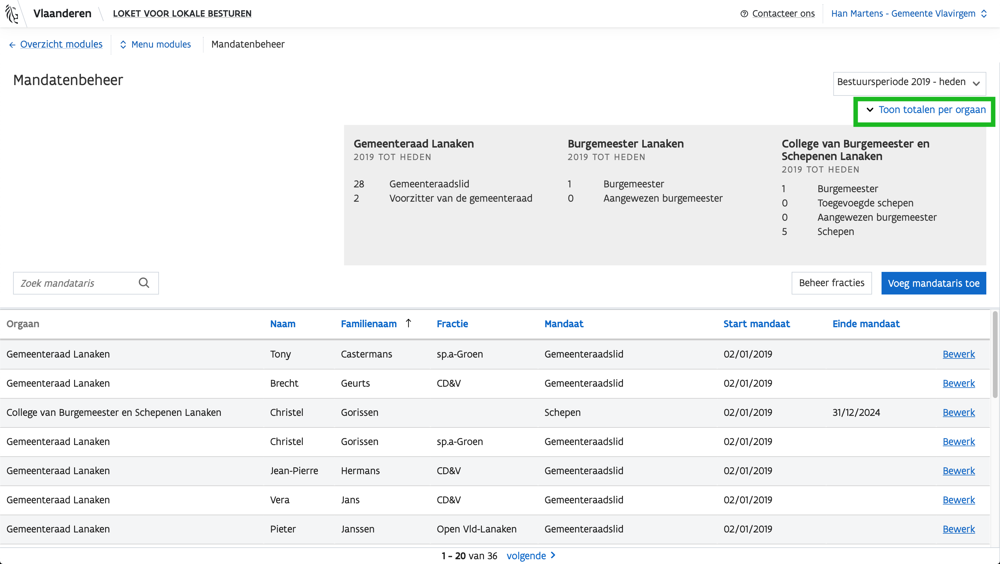Leden aantallen
Bewerken
Elk mandaat kan bewerkt worden, door op een rij op "bewerk" te klikken.
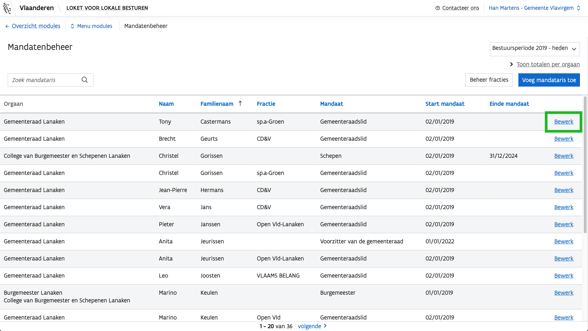Een zijbalk schuift open, met al de mandaten voor de betreffende mandataris. U krijgt dus meerdere rijen van de tabel te zien in de zijbalk.

Eens u besloten heeft om een mandaat aan te passen, krijgt u de vraag of u de huidige situatie wil aanpassen, of fouten wil corrigeren. Dit onderscheid is van belang om een correctie historiek bij te kunnen houden.


Bij het aanpassen van een situatie kan u enkel het huidige mandataat beëindigen — daarna dient u een nieuw mandaat te starten. Op deze manier worden alle records bijgehouden, en kan u de historiek van een mandataris bijhouden.

Bij het corrigeren van fouten mag alles aangepast worden. Het record wordt hier overschreven, en de historiek wordt aangepast.

Een nieuwe mandataris toevoegen: binnen de lijst van verkozenen
Via de knop rechtsboven Voeg mandataris toe kan u een nieuwe mandataris toevoegen.
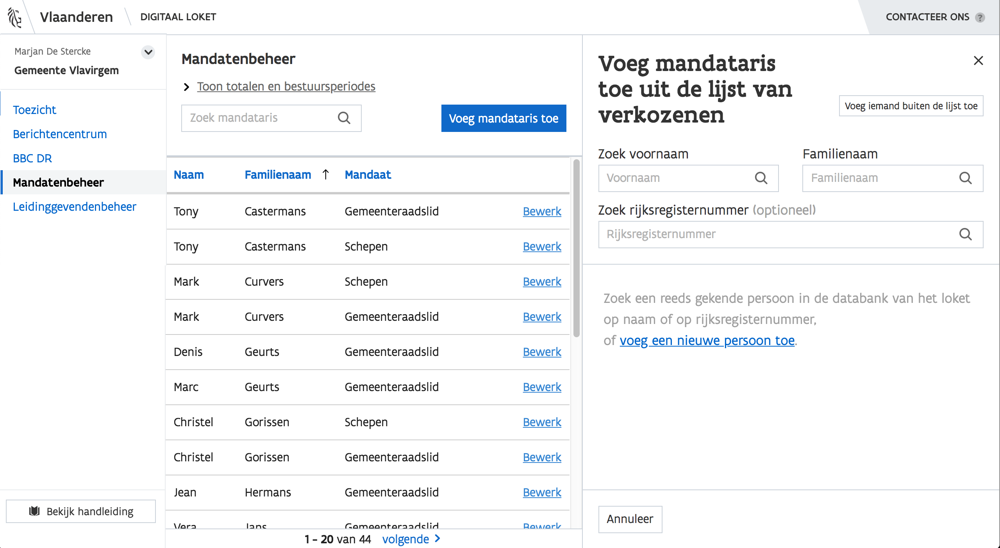U kan zoeken op voornaam, familienaam, rijksregisternummer of een combinatie van die drie zoekvelden.

U krijgt een overzicht van de personen op de lijst die overeenkomen met uw zoekterm(en). De link "details" geeft toegang tot meer details over de persoon in kwestie.

Om een mandaat toe te voegen aan de persoon, klikt up op Voeg nieuw mandaat toe.

Daar krijgt u de optie om verschillende mandaten toe te kennen.
Verschillende mandaten
In de dropdown "mandaat" kan u kiezen uit verschillende mandaten, afhankelijk van het bestuur waar u mee bent ingelogd.
Vul enkel de velden in die relevant zijn voor dat mandaat.
Gemeenteraadslid
Voor het mandaat gemeenteraadslid is voert u het mandaat, de start, het einde en de fractie in.
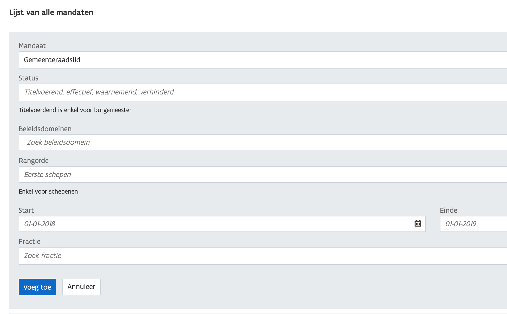Voorzitter van de gemeenteraad
Voor het mandaat voorzitter van de gemeenteraad vult u het mandaat, de start, het einde en de fractie in.
Burgemeester
Voor het mandaat burgemeester voert u het mandaat, de status, de start, het einde en de fractie in.

Burgemeester: status
De statussen kunnen zijn: effectief (dat is de standaard), titelvoerend, verhinderd of waarnemend.

Schepen
Voor het mandaat schepen voert u het mandaat, de bevoegdheden, de rangorde, de start, het einde en de fractie in.

U kan ervoor kiezen om te zoeken tussen de bestaande beleidsdomeinen door te typen, of u kan zelf een beleidsdomein toevoegen. Het is mogelijk om meerdere beleidsdomeinen te hebben.


Een mandataris buiten de lijst van verkozenen toevoegen
Het kan gebeuren dat een persoon buiten de lijst van verkozenen toegevoegd moet worden. Dat kan met de knop rechtsboven Voeg iemand buiten de lijst toe.
Ook in het geval dat uw zoektermen niets opleveren, kan dat betekenen dat u iemand buiten de lijst van verkozenen wil toevoegen. Kijk goed of uw zoekterm correct is, of dat de schrijfwijze in de databank niet overeenstemt.
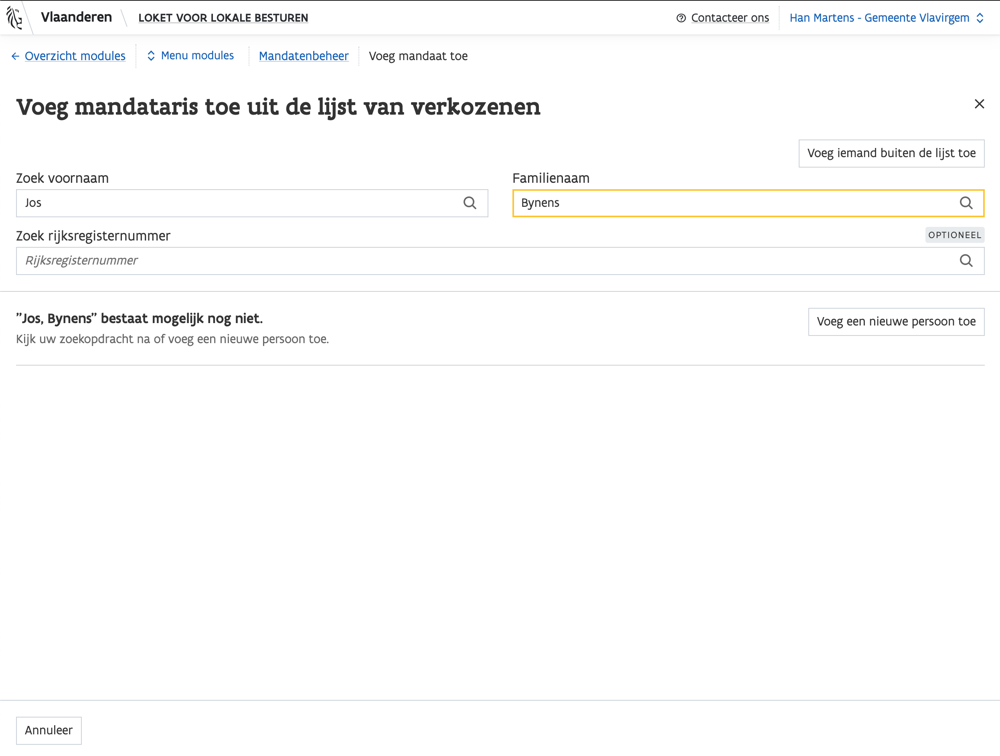U kan de persoon in kwestie toevoegen door voornaam, familienaam, roepnaam, rijksregisternummer, geboortedatum en geslacht in te vullen.
Opgelet: u kan deze gegevens achteraf niet meer wijzigen.
Vervolgens kan u net zoals bij de andere mandatarissen een mandaat toevoegen.

De velden voor het toevoegen van een mandaat zijn hetzelfde als bij een mandataris binnen de lijst van verkozenen.
Een mandaat verwijderen of mandataris aanpassen
Een mandaat verwijderen
Een mandaat verwijderen kan momenteel niet, omdat alle records bijgehouden worden. Indien u toch per abuis toch een foutief mandaat heeft toegevoegd, of er een heeft ontdekt, gelieve het door te geven aan LoketLokaalBestuur@vlaanderen.be.
Persoonlijke gegevens van een mandataris aanpassen
Gegevens van een mandataris aanpassen kan niet. Indien u een fout heeft ontdekt (schrijffout, geen roepnaam, rijksregisternummer, geslacht...), gelieve dit door te geven aan LoketLokaalBestuur@vlaanderen.be.
Mandatenbeheer scenario's
Scenario: vervanging schepen
Gender schepen (artikel 43, §3 DLB), waarbij de laatste schepen in rang vervangen wordt door het gemeenteraadslid van dezelfde lijst met de meeste naamstemmen.
Naamstemmen
Genderbalans
Leden aantallen
-
Log in met het juiste bestuur. In dit geval, de Gemeenteraad.
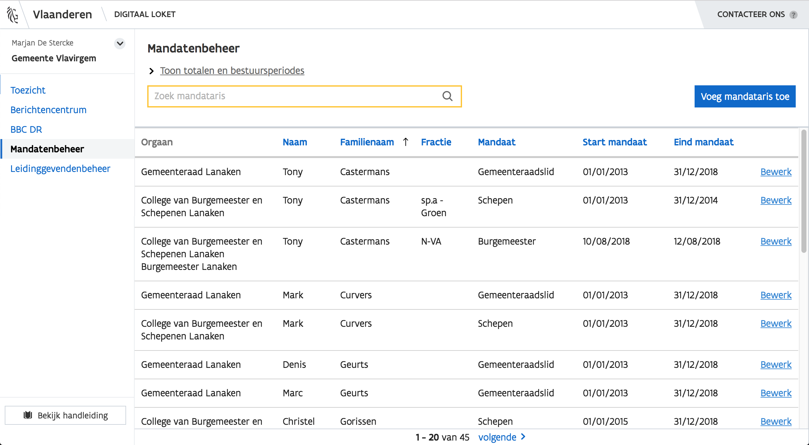 -
Zoek persoon 1 in de tabel.
Geslacht kan u bovenaan in de zijbalk terugvinden, rangorde en lijst kan u onder het mandaat in de zijbalk terugvinden.

Klik op de blauwe naam in de kolom om te sorteren. Een pijltje zal verschijnen met de richting.

-
Een mandaat dat van status verandert
Zoek het mandaat Schepen, en klik Pas aan.

Kies Wijzig einde mandaat — het gaat hier om een wijziging in het mandaat, niet om een correctie, aangezien het mandaat van de persoon in kwestie stopgezet wordt.
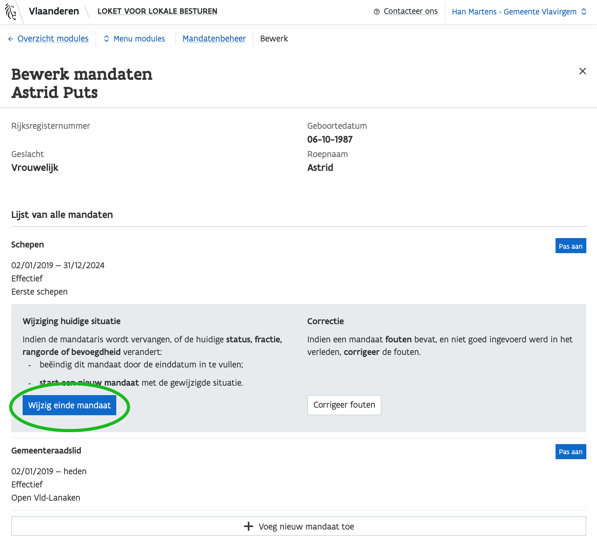Beëindig het mandaat, door het einde aan te passen naar de datum waarop het mandaat afloopt.

Het record wordt bijgehouden. Het wordt niet meer meegeteld in de huidige totalen bovenaan de tabel op de overzichtspagina indien het mandaat verlopen is.
-
Zoek persoon 2, die persoon 1 moet vervangen. Dat kan in de tabel of via de zijbalk (voeg mandataris toe). Indien de persoon niet op de lijst staat, kan u deze toevoegen buiten de lijst.

Klik op Bewerk, en vervolgens op Voeg nieuw mandaat toe om een mandaat toe te voegen aan de mandataris.
Geslacht kan u bovenaan in de zijbalk terugvinden, rangorde en lijst kan u onder het mandaat in de zijbalk terugvinden.
Naamstemmen worden niet opgenomen in het mandatenbeheer — raadpleeg daarvoor een andere bron.
Genderbalans

-
Kies Schepen en vul de gevraagde velden in met de juiste beleidsdomeinen, rangorde, start- en einddatum en fractie.

De gegevens werden opgeslagen in de databank, en zijn nu raadpleegbaar in zowel de tabel als in de zijbalk.

Scenario: vervanging enkel in Raad voor Maatschappelijk Welzijn
Lid van de Raad voor Maatschappelijk Welzijn (artikel 68, §2 DLB), waarbij de samenstelling van de Raad voor Maatschappelijk Welzijn afwijkt van die van de Gemeenteraad (lid blijft Gemeenteraads-lid, maar wordt in de Raad voor Maatschappelijk Welzijn vervangen).
-
Log in met het juiste bestuur. In dit geval, het OCMW.

-
Zoek persoon 1 in de tabel en klik op Bewerk. Geslacht kan u bovenaan in de zijbalk terugvinden, rangorde en lijst kan u onder het mandaat in de zijbalk terugvinden.
Genderbalans

U kan ook sorteren op mandaat. Klik op de blauwe naam in de kolom om te sorteren. Een pijltje zal verschijnen met de richting.
Op Bewerk klikken opent een zijbalk waarin u al de mandaten van de mandataris kan zien.

-
Een mandaat wijzigen
Zoek het mandaat Lid van de Raad voor Maatschappelijk Welzijn, en klik Pas aan.

Kies Wijzig einde mandaat — het gaat hier om een wijziging in het mandaat, niet om een correctie, aangezien het mandaat van de persoon in kwestie stopgezet wordt.

Beëindig het mandaat, door het einde aan te passen naar de datum waarop het mandaat afloopt.


Het record wordt bijgehouden. Het wordt niet meer meegeteld in de huidige totalen bovenaan de tabel op de overzichtspagina indien het mandaat verlopen is.
 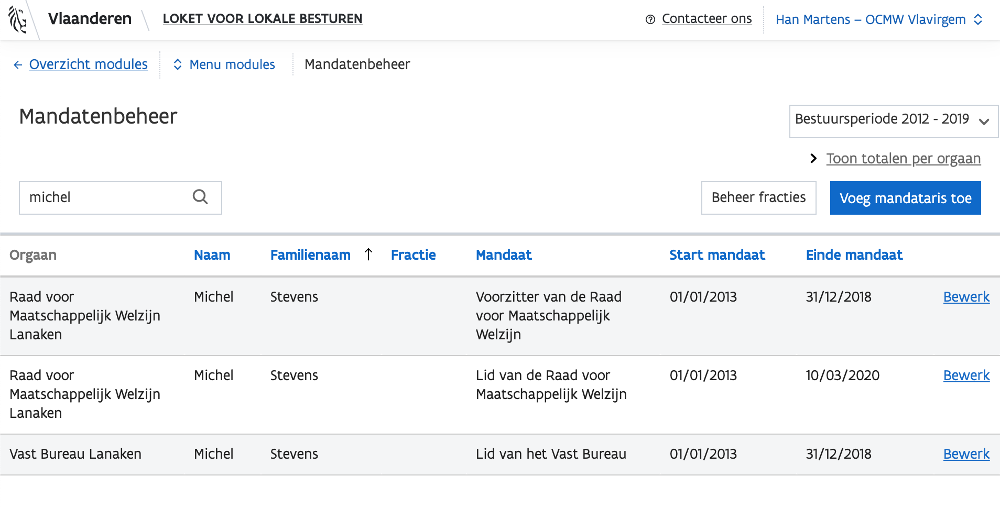
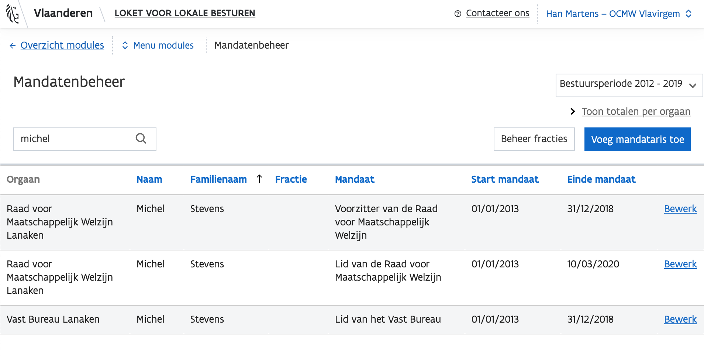 Zoek persoon 2, die persoon 1 moet vervangen. Dat kan via de tabel of via de zijbalk (voeg mandataris toe).

Het is mogelijk dat een persoon niet te vinden is in de tabel. Klik dan op "Voeg mandataris toe" om de persoon te zoeken. Indien deze niet opdaagt in de lijst, voeg een persoon toe buiten de lijst.
Genderbalans
-
Voeg een nieuw mandaat toe aan persoon 2.

Voeg het mandaat Lid van de Raad voor Maatschappelijk Welzijn toe aan persoon 2, en vul de gevraagde velden met het juiste mandaat, de start- en einddatum en de fractie.

-
Persoon 1 kan zijn of haar andere mandaten gewoon behouden, ook in de Gemeenteraad.
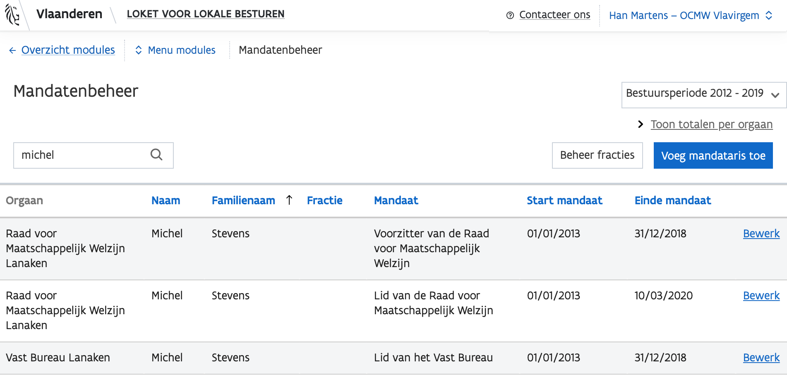
Een titelvoerend burgemeester met waarnemend burgemeester en opvolger.
Scenario: Een titelvoerend burgemeester met een einddatum en opvolger. De titelvoerende en waarnemende burgemeester worden opgevolgd door één persoon.
-
Zoek persoon 1 met mandaat burgemeester, en klik op Bewerk. Dat opent een zijbalk waarin u al de mandaten van de mandataris kan zien.

-
Een mandaat dat van status verandert
Zoek het mandaat Burgemeeser, en klik Pas aan.
Kies vervolgens Wijzig einde mandaat — het gaat hier om een wijziging in het mandaat, niet om een correctie, aangezien het mandaat van de persoon in kwestie stopgezet wordt.

Beëindig het mandaat, door het einde aan te passen naar de datum waarop het mandaat afloopt.

-
Vervolgens, voeg een nieuw mandaat toe aan persoon 1 als burgemeester, met status titelvoerend.


De records worden bijgehouden. Het wordt niet meer meegeteld in de huidige totalen bovenaan de tabel op de overzichtspagina indien het mandaat verlopen is. Titelvoerende en waarnemende burgemeesters worden meegenomen in de totalen bovenaan de tabel op de overzichtspagina (indien ze nog niet verlopen zijn).
-
Zoek persoon 2 die waarnemend burgemeester zou moeten worden, en klik op Bewerk. Dat opent een zijbalk waarin u al de mandaten van de mandataris kan zien.


-
Voeg het mandaat burgemeester toe, met status waarnemend, aan persoon 2. Vul ook de andere velden in — met dezelfde einddatum als persoon 1.


De records worden bijgehouden. Het wordt niet meer meegeteld in de huidige totalen bovenaan de tabel op de overzichtspagina indien het mandaat verlopen is. Titelvoerende en waarnemende burgemeesters worden meegenomen in de totalen bovenaan de tabel op de overzichtspagina (indien ze nog niet verlopen zijn).
-
Zoek persoon 3, die de opvolger zal zijn — en klik op Bewerk. Dat opent een zijbalk waarin u al de mandaten van de mandataris kan zien.

-
Voeg mandaat burgemeester toe, met geplande start — na gepland einde van mandaat persoon 1 en persoon 2 mét status effectief.
Voeg een nieuw mandaat toe.

Voeg het mandaat burgemeester toe, met status effectief, aan persoon 3. Vul ook de andere velden in — met als startdatum de einddatum van persoon 1 en persoon 2.

De records worden bijgehouden. Het wordt nog niet meegeteld in de huidige totalen bovenaan de tabel op de overzichtspagina indien het mandaat nog niet gestart is.
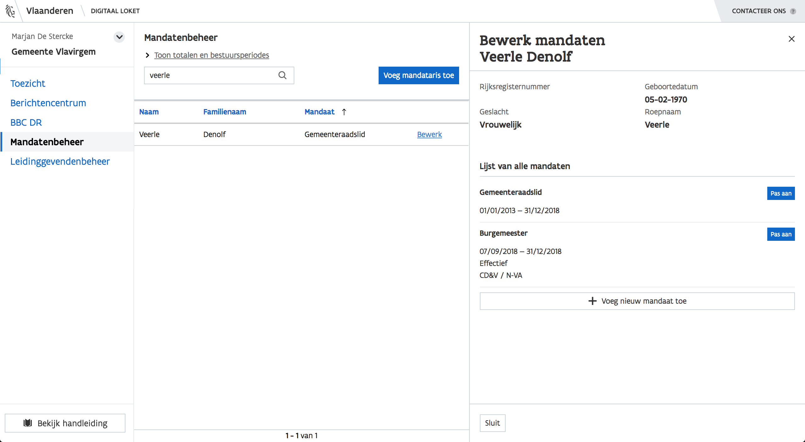
Een lid van de gemeenteraad/RMW dat ontslag neemt als raadslid maar in het BCSD blijft zitten
-
Log in met het juiste bestuur
-
Beëindig mandaat raadslid door gepland einde aan te passen
-
Andere mandaten kunnen blijven bestaan
Een wissel burgemeester-schepen, waarbij ze elkaar als opvolger hadden aangeduid, burgemeester wordt schepen, schepen burgemeester
-
Beëindig mandaat burgemeester van persoon 1 door gepland einde aan te passen
-
Voeg mandaat schepen aan persoon 1 toe
-
Beëindig mandaat schepen van persoon 2 door gepland einde aan te passen
-
Voeg mandaat burgemeester van persoon 2 toe
Een gemeente die met 9 schepenen start, maar het met één schepen minder doet na een ontslag halverwege de legislatuur
-
Beëindig mandaat schepen van betreffende schepen door gepland einde aan te passen
-
De gemeente kan verder met 8 schepenen.
Titelvoerend burgemeester verhinderd, opgevolgd door een waarnemend burgemeester
Scenario: (voorbeeld uit deze legislatuur) Burgemeester Theo Francken van Lubbeek wordt tot staatssecretaris benoemd in de federale regering; Roskams Tania wordt waarnemend burgemeester vanaf 22.12.2014; zij wordt als schepen opgevolgd door Geert Bofyn; Theo Francken wordt titelvoerend burgemeester en blijft ook raadslid tijdens de ganse legislatuur.
-
Theo Francken blijft gemeenteraadslid.
-
Scroll naar mandaat burgemeester, status effectief. Pas gepland einde aan naar 22-12-2014. Voeg een nieuw mandaat voor titelvoerend burgemeester, met geplande start 22-12-2014 (gepland einde = gepland einde van effectief burgemeesterschap voor de aanpassing)
-
Zoek naar Roskams Tania, klik op bewerk op één van de mandaten.
-
Scroll naar schepen, en beëindig mandaat (conflict met burgemeesterschap) op geplande start burgemeesterschap (22-12-2014). Voeg mandaat burgemeester toe, waarnemend, start 22-12-2014
-
Zoek Geert Bovyn en klik bewerk
-
Scroll naar beneden, voeg een nieuw mandaat toe, schepen, geplande start 22-12-2014
Een wissel burgemeester-schepen, waarbij ze elkaar als opvolger hadden aangeduid, burgemeester wordt schepen, schepen burgemeester
Scenario: (soortgelijk voorbeeld uit deze legislatuur) In Glabbeek wordt bij de formatie afgesproken dat de heer Jos Vicca (sp.a) het eerste jaar van de legislatuur burgemeester mag zijn (als mooie afsluiter van zijn politieke loopbaan), waarna de heer Peter Reekmans (Dorpspartij) de rest van de legislatuur burgemeester wordt. In deze politieke deal is mede onderhandeld dat voor de sp.a alle twee verkozenen in het college zetelen (als 4de en 5de schepen/ocmw-voorzitter). Na zijn burgemeesterjaar trekt Jos Vicca zich terug uit de politiek, en wordt zijn opvolgster Natasja Ons, 4de schepen in opvolging van Peter Reekmans die vanaf dan burgemeester wordt.
-
Zoek Jos Vicca (stond er helaas in als Karel Vicca?). Voeg toe als burgemeester (effectief), met een looptijd 1 jaar.
-
Zoek Peter Reekmans, voeg toe als burgemeester (effectief) na Jos Vicca;
-
en beëindig mandaat bij start van burgemeesterschap.
-
Zoek Natasja Ons, voe mandaat schepen toe (4de)
Situatie te Linkebeek, voordat er een burgemeester vanuit de gemeenteraad werd voorgedragen en effectief benoemd
Scenario: (voorbeeld uit deze legislatuur) In Linkebeek wordt Damien Thiéry voorgedragen als burgemeester; je bent aangewezen burgemeester vanaf het moment dat je in de rand wordt voorgedragen als burgemeester.
de Minister beslist tot NIET-benoeming; na de niet-benoeming is er GEEN aangewezen burgemeester meer maar komt er een waarnemend burgemeester, tot er een nieuwe voordracht komt en dan is er weer een aangewezen burgemeester. Als de minister tot benoeming overgaat is er een ‘echte’ burgemeester.
De aangewezen burgemeester wordt NIET als schepen vervangen wanneer hij verkozen werd tot schepen. Daardoor hebben ze zolang een schepen minder gehad. (artikel 13 NGW)
-
Damien Thiéry kan tijdelijk als effectieve burgemeester aangesteld worden, en zijn burgemeesterschap kan beëindigd worden door de het gepland einde aan te passen.
-
Er zijn geen beperking opgelegd. Er kan tijdelijk géén of een waarnemend burgemeester aangesteld worden.
-
Er moet ook geen vervangende schepen zijn, het systeem houdt het niet tegen.
Situatie bij het OCMW van Wezembeek-Oppem
Scenario: (voorbeeld uit deze legislatuur) In Wezembeek-Oppem is bij de formatie afgesproken dat het mandaat van ocmw-voorzitter door 3 verschillende verkozen raadsleden voor elk twee jaar zal worden opgenomen. De eerste wissel (Luc Matthys – Anne-Marie Servranckx) verloopt goed; bij de tweede wissel (Anne-Marie Servranckx – Nathalie Leclaire) loopt het mis. Tegen de beslissing tot voordracht lopen 3 klachten binnen bij ABB, wat leidt tot een hoorzitting bij de gouverneur, die van de bevoegde minister de taak krijgt haar kennis van het ocmw-bestuur en haar taalkennis af te toetsen. Minister Homans weigert haar te benoemen. Zij stapt naar de RvS; de RvS doet uitspraak; de gouverneur moet eerstdaags opnieuw een hoorzitting met de kandidate organiseren om haar taalkennis te evalueren.
Mevrouw Anne-Marie Servranckx had schriftelijk haar ontslag als ocmw-voorzitter gegeven, waarvan de ocmw-raad heeft kennis genomen. Om die reden is heden de heer Luc Matthys opnieuw in functie maar dan als waarnemend ocmw-voorzitter.
-
Aanstelling Matthys
-
Aanstelling Servranckx
-
! Er dient een aanvraag ingediend te worden om Leclaire te laten verwijderen van record
Of het kan blijven bestaan, maar Matthys wordt na beëindiging mandaat weer aangesteld.
-
Tweede aanstelling Matthys = nieuw mandaat toevoegen onderaan, nieuw record toevoegen
Administratieve Gegevens
U kan via de zijbalk of via het kaartje naar de administratieve gegevens navigeren. Hier kunnen administratieve- en personeelsgegevens kunnen beheerd worden voor de gemeenten, OCMW’s, districten en provincies.

Onderdelen
Afhankelijk van met welk bestuur u bent aangemeld, zijn er maximaal drie verschillende blokken die u kan invullen:
-
Contactgegevens

-
Functies

-
Politiezone

De velden zijn niet verplicht, maar dienen wel bijgehouden te worden.
Gebruikersbeheer
Aanmelden en navigeren
Om als interne beheerder rechten toe te kennen aan gebruikers, surft u naar https://vo-gebruikersbeheer-ti.vlaanderen.be/webidm. Meld u aan met uw favoriete aanmeldingssysteem.

Kies vervolgens de juiste doelgroep, en het bestuur waar u zich voor wil aanmelden.

Klik op 'snel rechten toekennen', om te starten.

Zoeken naar de juiste persoon
U krijgt een overzicht te zien, waar u kan zoeken naar de juiste persoon.


Zoeken naar de juiste rechten
Vervolgens kan u voor de geselecteerde persoon de juiste rechten zoeken. Zoek naar "Loket voor lokale besturen".


Rechten toekennen
Klik op "Loket voor lokale besturen" om rechten toe te kennen. Dit gebeurt op basis van context (niet meer op basis van rol zoals vroeger).
U kan een gebruiker bepaalde onderdelen van de applicatie toegang verlenen of ontkennen aan de hand van die contexten. Eens een gebruiker toegang heeft tot een bepaalde context, kan deze gebruiker alle acties uitvoeren voor de bijbehorende onderdelen. Een gebruiker kan rechten krijgen voor meerdere contexten.

Er zijn 3 contexten, voor 4 onderdelen van de applicatie:
Administratieve gegevens en mandatenbeheer werden in één context gestopt, om de eenvoudige reden dat gebruikers vroeger ook tot beide onderdelen toegang kregen. Dit wordt later aangepast.Geef een reden op om het recht toe te kennen. Voor deze demo zijn dat "testredenen", bij u zal dat anders zijn.

Voltooien
U wordt gevraagd om het toekennen van rechten te bevestigen, waarna een boodschap verschijnt indien het proces met succes voltooid werd.


Probleem
Indien er zich een probleem voordoet, neem contact op met het gebruikersbeheer Vlaanderen.